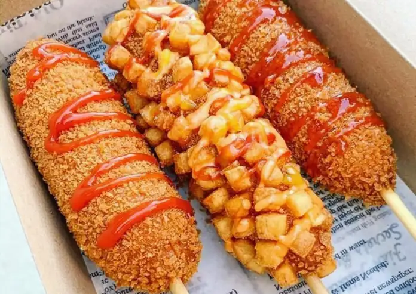
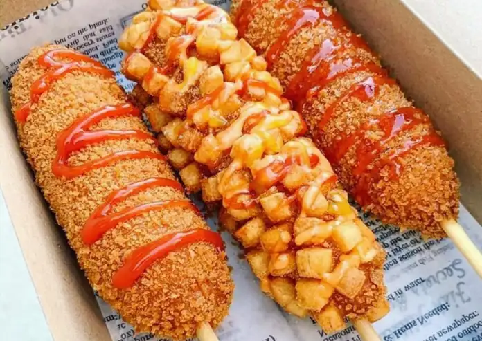
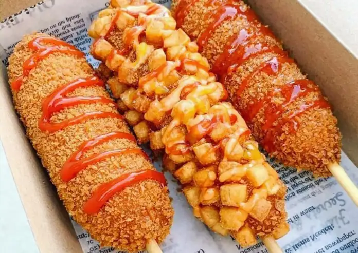

Las banderillas coreanas son una botana deliciosa y muy popular, inspirada en la comida callejera de Corea del Sur. Son perfectas para cualquier ocasión: crujientes por fuera, suaves por dentro, y siempre recién hechas. Estoamos comenzando este pequeño negocio con tres sabores que te van a encantar: - Queso derretido, ideal para los que aman lo cremosito. - Salchicha con queso, una combinación clásica que nunca falla. - Flaming Hot, para los que disfrutan el toque picante y crujiente. Son perfectas para compartir o disfrutar tú solo. ¡Te van a encantar!.

| Producto | Costo | Nivel de picor |
|---|---|---|
| Banderilla de Queso | 30 | 🔥 |
| Banderilla de Queso con especias | 30 | 🔥 |
| Banderilla de Queso con salchicha | 35 | 🔥 |
| Banderilla de Salchicha | 30 | 🔥 |
| Banderilla de Ramen Picante | 40 | 🔥🔥🔥 |
| Banderilla de Ramen Buldack | 45 | 🔥🔥 |
| Banderilla de Flaming Hot | 40 | 🔥🔥🔥 |
| Ramen Super Buldack o Super Flaming Hot | 110 | 🔥🔥🔥🔥🔥 |
Recuerda que somos y siempre seremos las mejores banderillas coreanas del condado.